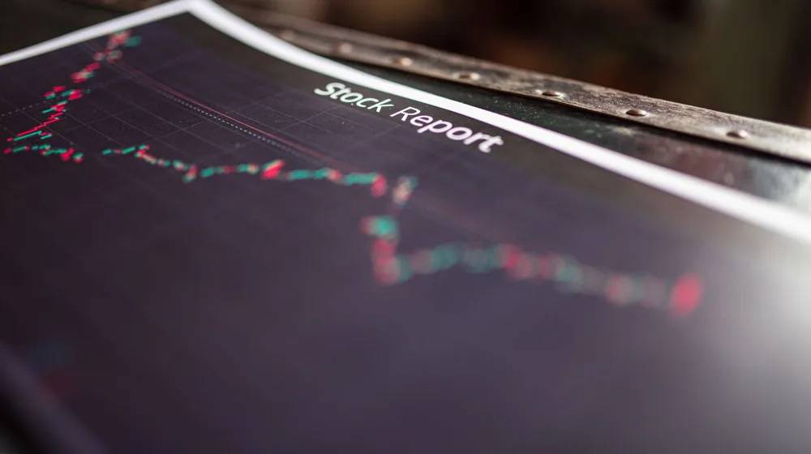

코스피, 대체 왜 오늘 갑자기 난리일까? 숨겨진 진짜 이유 셋
사진: Rafael Minguet Delgado / Pexels (무료 이미지, 출처 표기)
코스피, 그 이름 뒤에 숨겨진 진짜 정체는?

대부분의 사람에게 '코스피'는 그저 뉴스 헤드라인이나 주식 차트에서나 보는 복잡한 숫자처럼 느껴질지도 모릅니다. 하지만 놀랍게도 이 세 글자에는 대한민국 경제의 모든 희로애락이 고스란히 담겨 있죠. 마치 도시의 심장 박동처럼, 코스피는 우리 경제의 건강 상태를 실시간으로 보여주는 가장 중요한 지표입니다.
단순한 주가지수가 아닙니다. 코스피는 국내 기업들의 성장 가능성, 투자 심리, 심지어는 우리 삶의 크고 작은 변화까지 반영하는 거울과 같습니다. 기업의 실적이 좋으면 주가가 오르고, 이는 다시 투자와 고용으로 이어져 우리 경제에 활력을 불어넣는 선순환의 고리가 되죠.
평범한 지수가 아니다? 코스피가 오늘따라 뜨거웠던 이유
그렇다면 유독 오늘, 코스피가 검색어 순위를 뜨겁게 달궜던 특별한 이유가 무엇이었을까요? 주식 시장은 단 하나의 요인으로 움직이는 법이 없습니다. 하지만 최근 발표된 주요 경제 지표, 예를 들어 예상치를 뛰어넘는 수출 증가율이나 기업들의 깜짝 실적 발표가 투자 심리에 불을 지폈을 수 있습니다.
때로는 해외 증시의 예상치 못한 급등이나 정부의 새로운 경제 정책 발표가 코스피의 움직임에 결정적인 영향을 미치기도 합니다. 글로벌 자금의 흐름이나 특정 산업의 기술 혁신 소식이 전해지면, 시장은 그 변화에 민감하게 반응하며 투자자들의 관심이 폭발적으로 집중되곤 합니다.
코스피 변동이 내 삶에 미치는 의외의 영향 3가지
코스피의 움직임은 비단 주식 투자자만의 이야기가 아닙니다. 언뜻 상관없어 보이는 우리의 일상에도 깊숙이 영향을 미치죠. 첫째, 여러분의 소중한 노후 자금인 국민연금의 운용 수익률에 직접적인 영향을 줍니다. 국민연금이 국내 주식 시장에 막대한 자금을 투자하고 있기 때문입니다.
둘째, 기업들의 투자 심리와 고용 시장에도 영향을 미칩니다. 코스피가 활황이면 기업들은 미래를 긍정적으로 보고 투자와 신규 채용을 늘릴 가능성이 큽니다. 반대로 시장이 침체되면 기업들도 몸을 사리게 되죠. 셋째, 우리가 체감하는 경기에 대한 심리에도 영향을 줍니다. 코스피 상승은 경기가 좋아지고 있다는 신호로 받아들여져 소비 심리에도 긍정적인 영향을 줄 수 있습니다.
동학개미부터 서학개미까지, 코스피를 움직이는 진짜 손들
코스피 시장에는 다양한 주체들이 저마다의 전략으로 움직이며 지수를 변화시킵니다. 과거 외환 위기 이후 외국인 투자자들이 시장을 주도하던 때도 있었고, 팬데믹 시기에는 '동학개미'라 불리는 개인 투자자들이 대거 유입되어 시장에 새로운 활력을 불어넣기도 했습니다. 이들의 움직임은 지수의 방향을 결정하는 중요한 요소입니다.
최근에는 국내 주식뿐 아니라 해외 주식에 투자하는 '서학개미'들도 늘어나면서, 국내 시장에 대한 자금 배분에도 변화가 생기고 있습니다. 이처럼 다양한 투자자들의 복잡한 심리와 전략이 얽히고설켜 코스피의 매일매일 다른 얼굴을 만들어냅니다.
미래의 코스피, 우리는 무엇을 지켜봐야 할까?
앞으로 코스피가 어떤 방향으로 나아갈지 예측하는 것은 쉽지 않습니다. 하지만 몇 가지 핵심 포인트를 알고 있다면 시장의 흐름을 읽는 데 큰 도움이 될 것입니다. 글로벌 경기 침체 우려, 각국의 통화 정책 변화(금리 인상/인하), 그리고 반도체나 인공지능 같은 첨단 산업의 성장세가 주요 변수입니다.
특히 최근에는 인공지능(AI)과 친환경 에너지 기술의 발전이 글로벌 경제 지형을 바꾸고 있으며, 이는 코스피 상장 기업들의 미래 가치에도 지대한 영향을 미칠 것입니다. 단순히 숫자의 움직임을 넘어, 우리 경제와 세계의 변화를 읽는 통찰력을 길러주는 코스피. 오늘 당신의 삶과 연결된 이 중요한 지표에 잠시나마 귀 기울여 보는 것은 어떨까요?
🔗 이 글도 함께 보면 좋아요: 삼전, 대체 왜 난리일까? 숨겨진 투자 심리 미스터리 대분석!